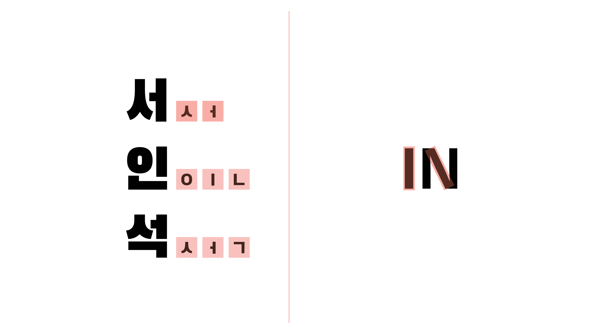
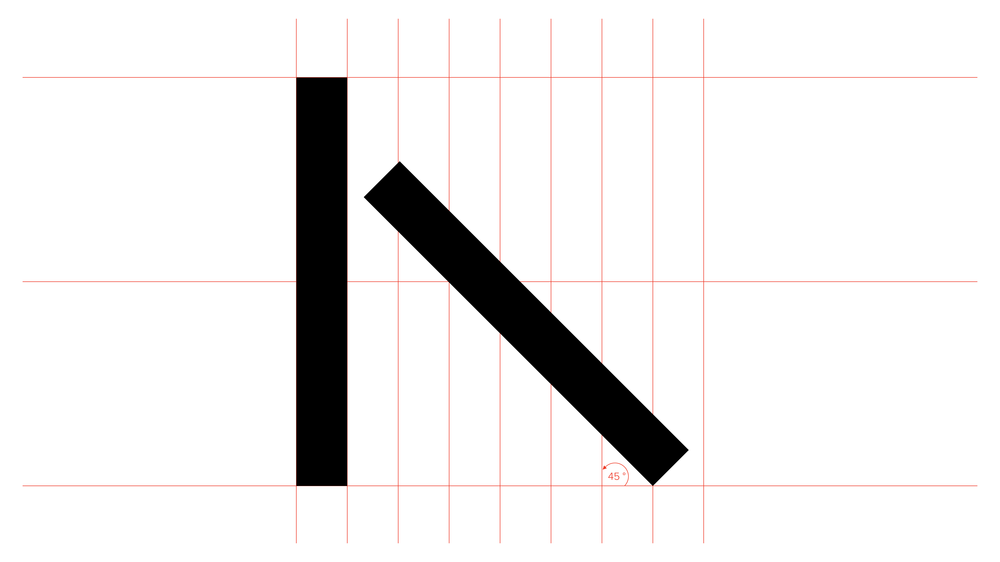
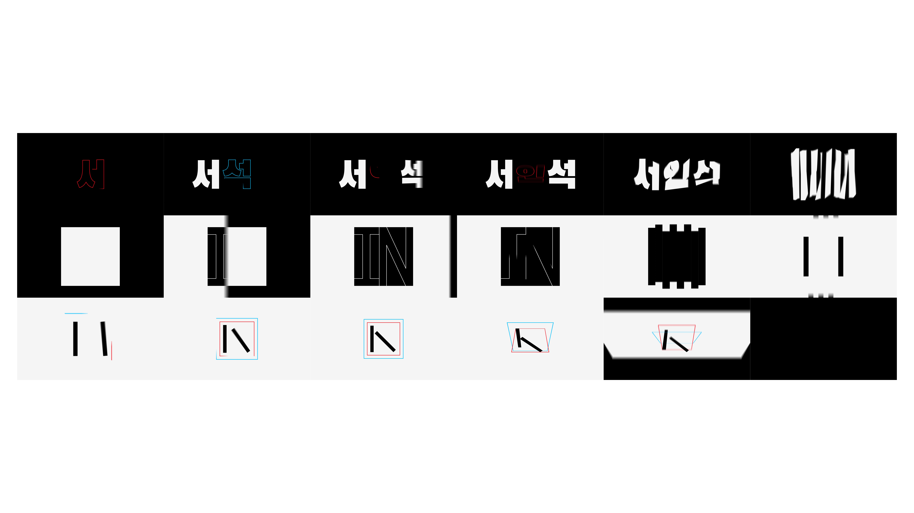
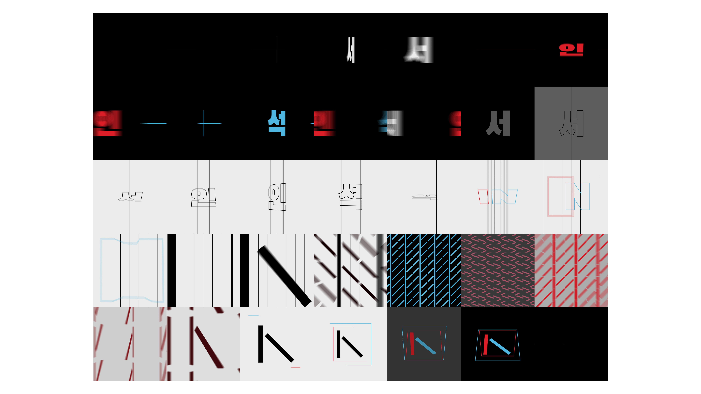

IN
IN is a self branding project which features the guidelines for the logo and also two motion graphics that explore motion and design for the brand (created in Adobe After Effects).
The design is inspired from the Korean and American alphabet which relates to my identity as a Korean American.